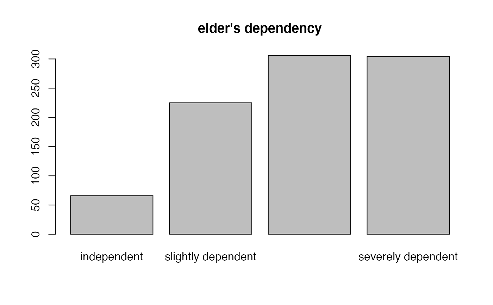

This function returns the value labels of labelled data.
get_labels(
x,
attr.only = FALSE,
values = NULL,
non.labelled = FALSE,
drop.na = TRUE,
drop.unused = FALSE
)A data frame with variables that have value label attributes (e.g.
from an imported SPSS, SAS or STATA data set, via read_spss,
read_sas or read_stata); a variable
(vector) with value label attributes; or a list of variables
with values label attributes. If x has no label attributes,
factor levels are returned. See 'Examples'.
Logical, if TRUE, labels are only searched for
in the the vector's attributes; else, if attr.only = FALSE
and x has no label attributes, factor levels or string values
are returned. See 'Examples'.
String, indicating whether the values associated with the
value labels are returned as well. If values = "as.name"
(or values = "n"), values are set as names
attribute of the returned object. If values = "as.prefix"
(or values = "p"), values are included as prefix
to each label. See 'Examples'.
Logical, if TRUE, values without labels will
also be included in the returned labels (see fill_labels).
Logical, whether labels of tagged NA values (see tagged_na())
should be included in the return value or not. By default, labelled
(tagged) missing values are not returned. See get_na
for more details on tagged NA values.
Logical, if TRUE, unused labels will be removed from
the return value.
Either a list with all value labels from all variables if x
is a data.frame or list; a string with the value
labels, if x is a variable;
or NULL if no value label attribute was found.
See vignette Labelled Data and the sjlabelled-Package
for more details; set_labels to manually set value
labels, get_label to get variable labels and
get_values to retrieve the values associated
with value labels.
# import SPSS data set
# mydat <- read_spss("my_spss_data.sav")
# retrieve variable labels
# mydat.var <- get_label(mydat)
# retrieve value labels
# mydat.val <- get_labels(mydat)
data(efc)
get_labels(efc$e42dep)
#> [1] "independent" "slightly dependent" "moderately dependent"
#> [4] "severely dependent"
# simple barplot
barplot(table(efc$e42dep))
# get value labels to annotate barplot
barplot(table(efc$e42dep),
names.arg = get_labels(efc$e42dep),
main = get_label(efc$e42dep))

# include associated values
get_labels(efc$e42dep, values = "as.name")
#> 1 2 3
#> "independent" "slightly dependent" "moderately dependent"
#> 4
#> "severely dependent"
# include associated values
get_labels(efc$e42dep, values = "as.prefix")
#> [1] "[1] independent" "[2] slightly dependent"
#> [3] "[3] moderately dependent" "[4] severely dependent"
# get labels from multiple variables
get_labels(list(efc$e42dep, efc$e16sex, efc$e15relat))
#> [[1]]
#> [1] "independent" "slightly dependent" "moderately dependent"
#> [4] "severely dependent"
#>
#> [[2]]
#> [1] "male" "female"
#>
#> [[3]]
#> [1] "spouse/partner" "child"
#> [3] "sibling" "daughter or son -in-law"
#> [5] "ancle/aunt" "nephew/niece"
#> [7] "cousin" "other, specify"
#>
# create a dummy factor
f1 <- factor(c("hi", "low", "mid"))
# search for label attributes only
get_labels(f1, attr.only = TRUE)
#> NULL
# search for factor levels as well
get_labels(f1)
#> [1] "hi" "low" "mid"
# same for character vectors
c1 <- c("higher", "lower", "mid")
# search for label attributes only
get_labels(c1, attr.only = TRUE)
#> NULL
# search for string values as well
get_labels(c1)
#> [1] "higher" "lower" "mid"
# create vector
x <- c(1, 2, 3, 2, 4, NA)
# add less labels than values
x <- set_labels(x, labels = c("yes", "maybe", "no"), force.values = FALSE)
#> "x" has more values than "labels", hence not all values are labelled.
# get labels for labelled values only
get_labels(x)
#> [1] "yes" "maybe" "no"
# get labels for all values
get_labels(x, non.labelled = TRUE)
#> [1] "yes" "maybe" "no" "4"
# get labels, including tagged NA values
library(haven)
x <- labelled(c(1:3, tagged_na("a", "c", "z"), 4:1),
c("Agreement" = 1, "Disagreement" = 4, "First" = tagged_na("c"),
"Refused" = tagged_na("a"), "Not home" = tagged_na("z")))
# get current NA values
x
#> <labelled<double>[10]>
#> [1] 1 2 3 NA(a) NA(c) NA(z) 4 3 2 1
#>
#> Labels:
#> value label
#> 1 Agreement
#> 4 Disagreement
#> NA(c) First
#> NA(a) Refused
#> NA(z) Not home
get_labels(x, values = "n", drop.na = FALSE)
#> 1 4 NA(c) NA(a) NA(z)
#> "Agreement" "Disagreement" "First" "Refused" "Not home"
# create vector with unused labels
data(efc)
efc$e42dep <- set_labels(
efc$e42dep,
labels = c("independent" = 1, "dependent" = 4, "not used" = 5)
)
get_labels(efc$e42dep)
#> [1] "independent" "dependent" "not used"
get_labels(efc$e42dep, drop.unused = TRUE)
#> [1] "independent" "dependent"
get_labels(efc$e42dep, non.labelled = TRUE, drop.unused = TRUE)
#> [1] "independent" "2" "3" "dependent"